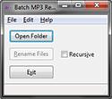
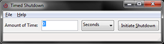

Batch Rename of MP3 Files
I have a large collection of music in mp3 format and was not always disciplined in naming the files. Eventually, this became really annoying and I wanted a tool to read the mp3 tag data on the files and rename them to whatever convention that I wanted. None of the programs I looked at were lean and just did that job. So, I decided to write my own. I used the WxWidgets library for the GUI and the Taglib library to read the mp3 data. You can download the source code and the executable here.
Timed Shutdown
I like to save energy and power and don't like to leave my computer on any more than I have to. So, I don't like to keep it on all night. If I have a task running or a download going, I like to have the computer shut down at some point. I got tired of manually typing out the command line. So, I wrote an executable to do it for me. I used the WxWidgets library for the GUI. You can download the source code and the executable here.